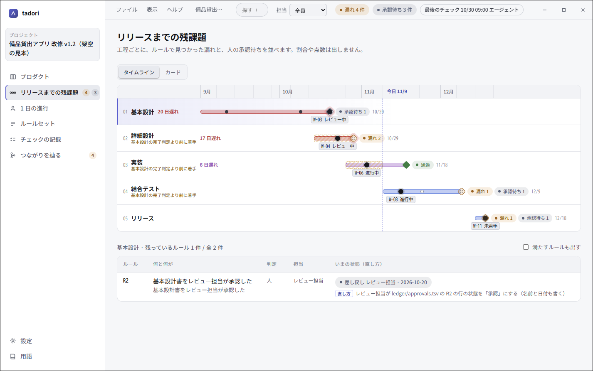
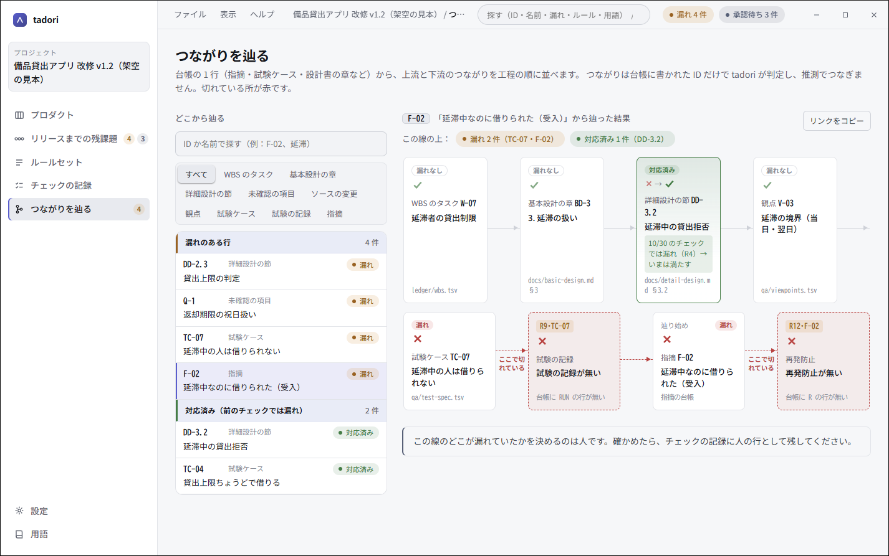
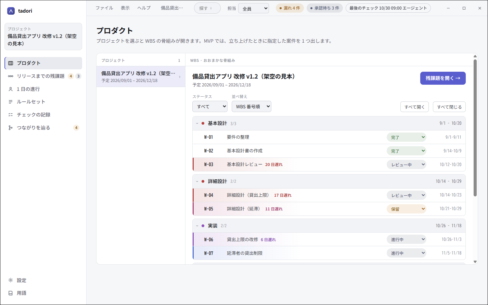
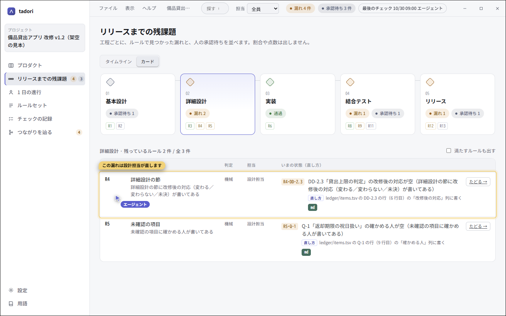
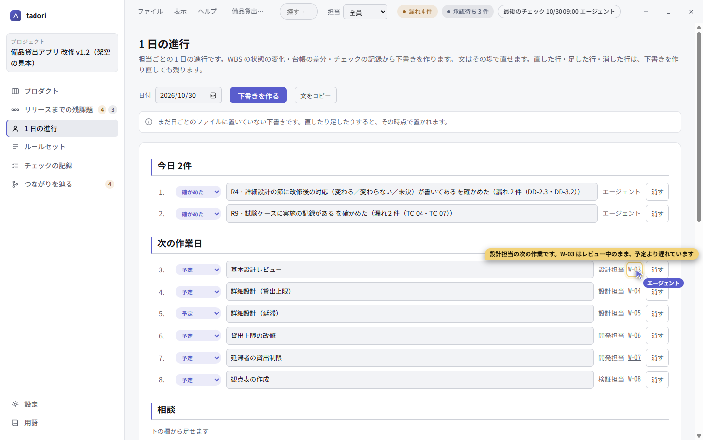

事例
tadori の使いどころ
どれも架空の「備品貸出アプリ 改修 v1.2」で再現しています。工程は 基本設計・詳細設計・実装・結合テスト・リリース の 5 つ、ルールは 13 個です。 同じ案件は リポジトリの examples/lend-v12 にあり、手元で同じ画面を開けます。

改修後の対応の書き漏れ
詳細設計の節に「変わる／変わらない」が書かれていない所を、ファイルと行番号まで出す。
事例を読む →
受入の指摘から辿る
「延滞中なのに借りられた」から、実施の記録が無い試験ケースに行き着く。
事例を読む →
前の工程が終わる前の着手
基本設計が差し戻しのまま、詳細設計・実装・結合テストが動いていることを並べる。
事例を読む →
エージェントに案内させる
MCP で読ませ、専用カーソルで画面を指しながら、新しく入った人に説明する。
事例を読む →
1 日の進行をエージェントと回す
担当ごとの下書きを材料から作り、各担当がそれを見ながら自分のエージェントと仕事を進める。
事例を読む →